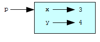
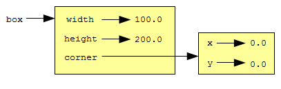
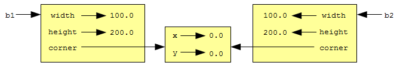

Python является объектно-ориентированным языком программирования, что означает наличие в языке средств объектно-ориентированного программирования (ООП).
Объектно-ориентированное программирование возникло в 1960 годы, но только в середине 1980-х оно стало основной парадигмой программирования, используемой при создании новых программ. ООП было разработано, чтобы справиться с быстро растущими размерами и сложностью программных систем, и упростить последующие сопровождение и модификацию этих больших и сложных систем.
До сих пор мы писали программы с использованием парадигмы процедурного программирования. Процедурное программирование фокусируется на создании функций или процедур, которые работают с данными. Объектно-ориентированное программирование фокусируется на создании объектов, которые содержат и данные и функциональность.
Класс, в сущности, определяет новый тип данных. Мы уже некоторое время пользуемся встроенными типами данных Python, а теперь готовы создать наш собственный (пользовательский) тип.
Рассмотрим понятие математической точки. В пространстве двух измерений, точка — это два числа (координаты), с которыми работают как с одним объектом. В математике координаты точки часто записываются в скобках, разделенные запятой. Например, (0, 0) представляет начало координат, а (x, y) представляет точку, расположенную на x единиц правее и на y единиц выше, чем начало координат.
Естественный способ представления точки на языке Python — с помощью двух чисел. Но остается вопрос: как именно объединить эти два числа в один составной объект? Очевидное и быстрое решение состоит в том, чтобы использовать список или кортеж, и в некоторых случаях оно будет наилучшим.
Альтернативой является определение нового типа, называемого также классом. Этот подход требует немного больше усилий, но имеет преимущества, которые вскоре станут вам понятны.
Определение нашего класса Point (англ.: точка) выглядит так:
class Point:
pass
Определения классов могут встречаться в программе где угодно, но обычно их помещают в начале, после предложений import. Синтаксические правила для определения класса такие же, как и для других составных предложений. Первая строка — заголовок, начинающийся с ключевого слова class, за которым следуют имя класса и двоеточие, следующие строки — тело класса.
Приведенное выше определение создает новый класс Point. Предложение pass ничего не делает; мы воспользовались им потому, что тело составного предложения не может быть пустым.
Для этой цели подойдет и документирующая строка:
class Point:
"Point class for storing mathematical points."
Создав класс Point, мы создали новый тип Point. Представители этого типа называются экземплярами или объектами этого типа. Создание экземпляра класса выполняется с помощью вызова класса. Классы, как и функции, можно вызывать, и мы создаем объект типа Point, вызывая класс Point:
>>> type(Point)
<type 'classobj'>
>>> p = Point()
>>> type(p)
<type 'instance'>
Переменная p содержит ссылку на новый объект типа Point.
Можно думать о классе, как о фабрике по изготовлению объектов. Тогда наш класс Point — фабрика по изготовлению точек. Сам класс не является точкой, но содержит все, что необходимо для производства точек.
Как и объекты реального мира, экземпляры классов обладают свойствами и поведением. Свойства определяются элементами-данными, которые содержит объект.
Можно добавить новые элементы-данные к экземпляру класса с помощью точечной нотации:
>>> p.x = 3
>>> p.y = 4
Этот синтаксис подобен синтаксису для обращения к переменной или функции модуля, например, math.pi или string.uppercase. И модули, и экземпляры класса создают свое собственное пространство имен, и синтаксис для доступа к элементам тех и других — атрибутам — один и тот же. В данном случае атрибуты, к которым мы обращаемся, — элементы-данные в экземпляре класса.
Следующая диаграмма состояний показывает результат выполненных присваиваний:
Переменная p ссылается на объект класса Point, который содержит два атрибута. Каждый из атрибутов ссылается на число.
Тот же самый синтаксис используется для получения значений атрибутов:
>>> print p.y
4
>>> x = p.x
>>> print x
3
Выражение p.x означает: возьмите объект, на который указывает переменная p, затем возьмите значение атрибута x этого объекта. В приведенном примере мы присваиваем полученное значение переменной с именем x. Переменная x и атрибут x не вступают в конфликт имен, поскольку принадлежат разным пространствам имен.
Точечную нотацию можно использовать как часть любого выражения, так что следующие предложения совершенно типичны:
print '(%d, %d)' % (p.x, p.y)
distance_squared = p.x * p.x + p.y * p.y
Первая строка выводит (3, 4). Вторая строка вычисляет значение 25.
Поскольку наш класс Point предназначен для представления математических точек в двумерном пространстве, все экземпляры этого класса должны иметь атрибуты x и y. Но пока это не так для наших объектов Point.
>>> p2 = Point()
>>> p2.x
Traceback (most recent call last):
File "<stdin>", line 1, in ?
AttributeError: Point instance has no attribute 'x'
>>>
Для решения этой проблемы добавим в наш класс инициализирующий метод.
class Point:
def __init__(self, x=0, y=0):
self.x = x
self.y = y
Метод ведет себя как функция, но является частью объекта. Доступ к методу, как и доступ к атрибутам-данным, осуществляется при помощи точечной нотации. Инициализирующий метод вызывается автоматически, когда вызывается класс.
Чтобы получше разобраться, как работают методы, давайте добавим еще один метод, distance_from_origin (англ.: расстояние от начала):
class Point:
def __init__(self, x=0, y=0):
self.x = x
self.y = y
def distance_from_origin(self):
return ((self.x ** 2) + (self.y ** 2)) ** 0.5
Создадим несколько экземпляров точек, посмотрим на их атрибуты, и вызовем наш новый метод для этих объектов:
>>> p = Point(3, 4)
>>> p.x
3
>>> p.y
4
>>> p.distance_from_origin()
5.0
>>> q = Point(5, 12)
>>> q.x
5
>>> q.y
12
>>> q.distance_from_origin()
13.0
>>> r = Point()
>>> r.x
0
>>> r.y
0
>>> r.distance_from_origin()
0.0
В определении метода первый параметр всегда указывает на экземпляр класса. Традиционно этому параметру дают имя self. В только что рассмотренном примере параметр self последовательно указывает на объекты p, q, и r.
Объект можно передать в качестве параметра, как любое другое значение. Например:
def print_point(p):
print '(%s, %s)' % (str(p.x), str(p.y))
Функция print_point принимает объект Point в качестве аргумента и выводит его значение. Если выполнить print_point(p) с объектом p, определенным выше, то функция выведет (3, 4).
Смысл слова ‘равенство’ кажется совершенно ясным. Но если говорить об объектах, то мы скоро обнаружим неоднозначность этого слова.
Например, что означает утверждение, что значения двух переменных типа Point равны? Что соответствующие объекты Point содержат одинаковые данные (координаты точки)? Или что обе переменные указывают на один и тот же объект?
Чтобы выяснить, ссылаются ли две переменные на один и тот же объект, используется оператор ==. Например:
>>> p1 = Point()
>>> p1.x = 3
>>> p1.y = 4
>>> p2 = Point()
>>> p2.x = 3
>>> p2.y = 4
>>> p1 == p2
False
Хотя p1 и p2 содержат одинаковые координаты, они являются разными объектами. Но если присвоить переменной p1 значение p2, то две переменных будут альтернативными именами одного и того же объекта:
>>> p2 = p1
>>> p1 == p2
True
Этот тип равенства называется поверхностным равенством, потому что он сравнивает только ссылки, а не содержимое объектов.
Для того, чтобы сравнить содержимое объектов — проверить глубокое равенство — можно написать функцию, подобную этой:
def same_point(p1, p2):
return (p1.x == p2.x) and (p1.y == p2.y)
Теперь, если создать два разных объекта, содержащих одинаковые данные, с помощью same_point можно выяснить, представляют ли они одну и ту же математическую точку.
>>> p1 = Point()
>>> p1.x = 3
>>> p1.y = 4
>>> p2 = Point()
>>> p2.x = 3
>>> p2.y = 4
>>> same_point(p1, p2)
True
А если две переменные ссылаются на один и тот же объект, для них выполняется как поверхностное, так и глубокое равенство.
Пусть нам нужен класс для представления прямоугольников. Вопрос в том, какую информацию необходимо указать, чтобы описать прямоугольник? Для простоты предположим, что стороны прямоугольника ориентированы горизонтально и вертикально.
Есть несколько вариантов. Мы могли бы указать координаты центра прямоугольника и его размер (ширину и высоту). Или указать координаты одного из углов и размер прямоугольника. Или указать координаты двух противоположных углов. Традиционный способ таков: указать левый верхний угол прямоугольника и его размер.
Определим новый класс Rectangle (англ.: прямоугольник):
class Rectangle:
pass
И создадим экземпляр этого класса:
box = Rectangle()
box.width = 100.0
box.height = 200.0
Этот код создает новый объект Rectangle с двумя атрибутами — числами с плавающей точкой – width (англ.: ширина) и height (англ.: высота). А для того, чтобы указать левый верхний угол, можно вставить объект внутрь объекта!
box.corner = Point()
box.corner.x = 0.0
box.corner.y = 0.0
Операторы точка можно сочетать, как видно из этого примера. Выражение box.corner.x означает: возьмите объект, на который указывает box, получите его атрибут corner; затем возьмите объект, на который указывает этот атрибут, и получите атрибут x этого последнего объекта.
Следующий рисунок иллюстрирует, что у нас получилось:
Функции могут возвращать объекты. Например, функция find_center берет Rectangle в качестве аргумента и возвращает Point с координатами центра прямоугольника:
def find_center(box):
p = Point()
p.x = box.corner.x + box.width/2.0
p.y = box.corner.y - box.height/2.0
return p
Следующий код демонстрирует использование функции:
>>> center = find_center(box)
>>> print_point(center)
(50.0, 100.0)
Состояние объекта изменяется путем присваивания значений его атрибутам. Например, чтобы изменить размер прямоугольника без изменения его местоположения, изменим значения width и height:
box.width = box.width + 50
box.height = box.height + 100
Обобщим этот код, определив функцию grow_rect (англ.: увеличить прямоугольник):
def grow_rect(box, dwidth, dheight):
box.width += dwidth
box.height += dheight
Альтернативные имена могут сделать программу трудночитаемой, так как изменения, сделанные в одном месте, могут возыметь неожиданное действие в другом. Сложно отслеживать все переменные, ссылающиеся на некоторый объект.
Вместо использования альтернативных имен для одного и того же объекта, во многих случаях полезно получить копию объекта. Модуль copy содержит функцию copy, которая способна скопировать любой объект:
>>> import copy
>>> p1 = Point()
>>> p1.x = 3
>>> p1.y = 4
>>> p2 = copy.copy(p1)
>>> p1 == p2
False
>>> same_point(p1, p2)
True
После импортирования модуля copy, с помощью функции copy мы создаем новый объект класса Point. Объекты p1 и p2 являются разными объектами, но содержат одинаковые данные.
Для копирования простых объектов вроде Point, которые не содержат вложенных объектов, функции copy достаточно. Такое копирование называется поверхностным копированием.
Для объектов, подобных объектам Rectangle, которые содержат ссылку на объект Point, функция copy не совсем то, что обычно требуется. Она скопирует ссылку на объект Point, так, что и старый объект Rectangle, и новый, будут ссылаться на один и тот же объект Point.
Если мы создадим прямоугольник b1 и сделаем его копию b2 с помощью copy, то результат будет таким:
Это, скорее всего, не то, что мы хотели получить. В этом случае вызов функции grow_rect с одним объектом Rectangle не повлияет на другой, однако, вызов move_rect (см. упражнения в конце главы) с любым из прямоугольников отразится на обоих! Такое поведение сбивает с толку и чревато ошибками.
К счастью, модуль copy содержит метод deepcopy, который копирует не только сам объект, но и все вложенные объекты. Неудивительно, что эта операция называется глубоким копированием.
>>> b2 = copy.deepcopy(b1)
Теперь b1 и b2 — совершенно разные объекты.
Используя deepcopy, можно переписать grow_rect так, чтобы вместо изменения существующего объекта Rectangle, он создавал новый объект Rectangle с таким же расположением левого верхнего угла, но с другими размерами:
def grow_rect(box, dwidth, dheight):
import copy
new_box = copy.deepcopy(box)
new_box.width += dwidth
new_box.height += dheight
return new_box
В качестве еще одного примера определенного пользователем типа, создадим класс Time (англ.: время) для хранения времени дня. Определение класса будет таким:
class Time:
pass
Теперь мы можем создать новый объект класса Time и установить значения атрибутов для часов, минут и секунд:
time = Time()
time.hours = 11
time.minutes = 59
time.seconds = 30
В следующих разделах мы напишем две версии функции add_time (англ.: сложить время) для вычисления суммы двух объектов Time. Они еще раз продемонстрируют нам два типа функций, с которыми мы познакомились в главе 8: чистые и модифицирующие.
Вот черновая версия функции add_time:
def add_time(t1, t2):
sum = Time()
sum.hours = t1.hours + t2.hours
sum.minutes = t1.minutes + t2.minutes
sum.seconds = t1.seconds + t2.seconds
return sum
Функция создает новый объект Time, инициализирует его атрибуты, и возвращает ссылку на него. Это — чистая функция, поскольку она не изменяет ни один из переданных ей объектов и не имеет побочных эффектов, вроде вывода значения на печать или получения ввода от пользователя.
Вот пример использования этой функции. Мы создадим два объекта Time: current_time, содержащий текущее время, и bread_time, содержащий количество времени, необходимое хлебопечке для приготовления хлеба. Затем воспользуемся функцией add_time чтобы узнать, во сколько хлеб будет готов.
>>> current_time = Time()
>>> current_time.hours = 9
>>> current_time.minutes = 14
>>> current_time.seconds = 30
>>> bread_time = Time()
>>> bread_time.hours = 3
>>> bread_time.minutes = 35
>>> bread_time.seconds = 0
>>> done_time = add_time(current_time, bread_time)
Определим функцию print_time для вывода объекта Time, воспользовавшись оператором форматирования сток:
def print_time(time):
print "%02i:%02i:%02i" % (time.hours, time.minutes, time.seconds)
Теперь выведем полученный нами результат:
>>> print_time(done_time)
12:49:30
Программа выводит 12:49:30, и это правильный результат. Однако, в некоторых случаях результат работы функции add_time будет неверным. Можете сами привести пример такого случая?
Проблема с функцией add_time в том, что функция не учитывает случаи, когда сумма секунд или минут превышает 60. Когда это случается, необходимо выполнить перенос из переполнившегося разряда в разряд минут или часов.
Вот вторая, улучшенная, версия нашей функции:
def add_time(t1, t2):
sum = Time()
sum.hours = t1.hours + t2.hours
sum.minutes = t1.minutes + t2.minutes
sum.seconds = t1.seconds + t2.seconds
if sum.seconds >= 60:
sum.seconds = sum.seconds - 60
sum.minutes = sum.minutes + 1
if sum.minutes >= 60:
sum.minutes = sum.minutes - 60
sum.hours = sum.hours + 1
return sum
Хотя эта версия более корректна, функция перестала быть компактной. Чуть позже будет предложен другой подход, который даст нам более короткий код.
Бывают случаи, когда изменение функцией объектов, переданных ей как параметры, оказывается полезным. Обычно вызывающий код сохраняет ссылки на объекты, которые он передает функции в качестве параметров, так что все изменения, сделанные функцией, доступны в вызывающем коде. Как вы помните, функции, работающие таким образом, называются модифицирующими.
Функцию increment, добавляющую указанное число секунд к объекту Time, наиболее естественно написать как модифицирующую. Вот ее черновая версия:
def increment(time, seconds):
time.seconds = time.seconds + seconds
if time.seconds >= 60:
time.seconds = time.seconds - 60
time.minutes = time.minutes + 1
if time.minutes >= 60:
time.minutes = time.minutes - 60
time.hours = time.hours + 1
Первая строка выполняет основную операцию. Остальной код обрабатывает специальные случаи, которые мы обсудили выше.
Корректна ли эта функция? Что случится, если количество секунд, переданное функции, намного больше, чем 60? В этом случае недостаточно одного переноса 1 в разряд минут; мы должны выполнять переносы до тех пор, пока значение seconds продолжает быть меньше 60. Одно из возможных решений — заменить предложение if предложением while:
def increment(time, seconds):
time.seconds = time.seconds + seconds
while time.seconds >= 60:
time.seconds = time.seconds - 60
time.minutes = time.minutes + 1
while time.minutes >= 60:
time.minutes = time.minutes - 60
time.hours = time.hours + 1
Теперь функция работает правильно, но это не самое эффективное решение.
В этой книге мы широко используем подход к разработке программ, называемый прототипированием. Согласно этому подходу, вначале пишется грубый черновой вариант кода, или прототип, который выполняет основную работу. Затем прототип тестируется при различных условиях, и по результатам тестирования делаются доработки и устраняются найденные недостатки.
Хотя этот подход в целом эффективен, но, если пренебречь тщательным обдумыванием решаемой задачи, он может привести к излишне усложненному и ненадежному коду. Усложненному – поскольку придется иметь дело со многими специальными случаями. И ненадежному — поскольку нельзя утверждать, что все такие случаи учтены и все ошибки найдены.
Разработка дизайна программы предполагает тщательный анализ поставленной задачи и принятие ключевых решений относительно того, как именно написать программу. Предварительная разработка дизайна программы делает последующее программирование намного проще.
В данном случае, анализ подскажет нам, что объект Time, представляющий количество времени, есть не что иное, как трехразрядное число с основанием 60! Действительно, секунды — это младший разряд единиц, минуты — разряд “шестидесяток”, а часы представлены самым старшим разрядом. “Единица” старшего разряда соответствует 3600 секундам.
Когда мы писали функции add_time и increment, мы на самом деле выполняли сложение в системе счисления с основанием 60, вот почему нам пришлось делать переносы из одного разряда в другой.
Это наблюдение предлагает другой подход к задаче в целом: мы можем преобразовать три компонента объекта Time в одно единственное число, и далее выполнять арифметические действия с этим числом. Следующая функция преобразует объект Time в целое число:
def convert_to_seconds(t):
minutes = t.hours * 60 + t.minutes
seconds = minutes * 60 + t.seconds
return seconds
Все, что нам нужно теперь, — это способ преобразовать целое число обратно в Time:
def make_time(seconds):
time = Time()
time.hours = seconds/3600
seconds = seconds - time.hours * 3600
time.minutes = seconds/60
seconds = seconds - time.minutes * 60
time.seconds = seconds
return time
Посмотрите внимательно на приведенный код, чтобы убедиться, что преобразование выполняется корректно. Если вы согласны с этим, то перепишите add_time с использованием этих функций:
def add_time(t1, t2):
seconds = convert_to_seconds(t1) + convert_to_seconds(t2)
return make_time(seconds)
Эта версия гораздо короче первоначальной, и проверить ее корректность гораздо проще (исходя из предположения, что вызываемые ей функции сами по себе корректны).
Преобразование представления чисел из системы счисления с одним основанием в другую, и затем обратно, на первый взгляд кажется сложнее, чем прямое манипулирование привычными нам тремя компонентами времени: часами, минутами и секундами. А раз так, то не лучше ли полагаться на привычку, когда имеем дело со временем?
Но если мы нашли решение, основанное на представлении количества времени числом с основанием 60, и написали функции преобразования (convert_to_seconds и make_time), мы получаем более короткую и более надежную программу, которую легче читать и отлаживать.
Кроме того, к такой программе легче добавлять новые возможности. Представьте, например, что нам потребуется делать вычитание объектов Time, чтобы найти интервал времени между ними. Наивный подход состоит в том, чтобы реализовать вычитание с заемом из старших разрядов. Используя же функции преобразования, можно решить эту задачу гораздо проще, и с большей вероятностью получить корректный результат.
Таким образом, иногда, делая решение более сложным, или более общим, мы делаем его использование и дальнейшее развитие более простым (!) и надежным. Потому что становится меньше специальных случаев и меньше возможностей для ошибок.